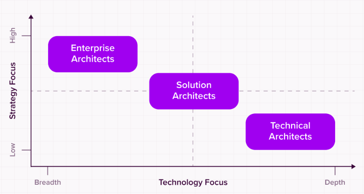

Arquitectura de soluciones
A medida que la revolución digital continúa, las organizaciones corren el riesgo de quedarse atrás si no
actualizan su tecnología. Sin embargo, las transformaciones digitales solo tienen un 30 % de éxito. Es una
verdadera batalla evitar los numerosos obstáculos que presenta la implementación de un cambio estratégico.
El reto también reside en garantizar que las nuevas soluciones se adapten perfectamente a su negocio y estén
alineadas con sus objetivos. Una solución a medida cumple todos los requisitos, y ahí es donde entra en
juego la arquitectura de soluciones.
¿Qué es la Arquitectura de Soluciones?
La arquitectura de soluciones (AS) diseña y ofrece soluciones tecnológicas que abordan desafíos
empresariales específicos. Implica adaptar la solución a los requisitos de la organización y garantizar su
integración en la Arquitectura Empresarial (AE).
La arquitectura de soluciones comienza con la evaluación del panorama de TI actual y las necesidades y
objetivos de la empresa. Propone un plan para una solución que mejore el negocio, como migrar una aplicación
existente a tecnologías en la nube o aprovechar las innovaciones para abordar desafíos empresariales
costosos (como la computación en la nube o una transformación digital completa), y proporciona un marco de
apoyo para su implementación.
La documentación arquitectónica resultante debe incluir directrices para una implementación y entrega
eficaces de la solución y una integración adecuada con la arquitectura existente de la empresa.
Un arquitecto de soluciones suele ser responsable de:
- Diseñar soluciones técnicas detalladas que cumplan con los objetivos específicos del proyecto.
- Garantizar que cada proyecto de software se alinee con la estrategia empresarial general y los
estándares
tecnológicos.
- Trabajar estrechamente con los equipos de desarrollo para guiar la implementación de las soluciones
diseñadas.
- Evaluar las limitaciones del proyecto para encontrar alternativas, mitigar riesgos y realizar
reingeniería
de procesos si es necesario.
- Conectar con las partes interesadas técnicas y no técnicas.
Gracias a su amplio conocimiento de las tecnologías disponibles, el arquitecto de soluciones
identificará el
mejor software y hardware para desarrollar esta solución, de acuerdo con el presupuesto
disponible.
Compartirá sus hallazgos en un documento o diagrama de SA.
Una vez aprobado el plan, el arquitecto de soluciones supervisa el proyecto y se asegura de que
se
mantenga
dentro del plazo y el presupuesto. También es responsable de mantener informadas a las partes
interesadas,
lo que significa traducir los detalles técnicos del proyecto a un lenguaje sencillo.

¿Cuándo necesita una empresa una arquitectura de soluciones?
La arquitectura de soluciones adopta diversas formas según las necesidades del negocio. Una empresa suele
necesitar una arquitectura de soluciones cuando se enfrenta a desafíos tecnológicos, oportunidades de
crecimiento o la necesidad de alinear estratégicamente los objetivos de TI con los del negocio. Por ejemplo,
podría estar desarrollando una nueva infraestructura en la nube o microservicios para equipos internos.
Ante un desafío empresarial, la arquitectura de soluciones consiste en la evaluación de las tecnologías
disponibles y el desarrollo de los componentes necesarios para lograr la solución deseada. Esto incluye el
análisis de todos los aspectos de la solución, como el presupuesto, la tecnología, el riesgo, el tiempo y la
calidad, para identificar las limitaciones y planificar las soluciones en consecuencia.
Arquitectura de la solución: ¿Cuáles son los principios?
- Comprender el problema o la necesidad: Esto requiere un conocimiento profundo del propósito, los
valores
y los objetivos de la organización, así como de sus procesos y la arquitectura empresarial existente.
- Encontrar la mejor solución posible: Esto significa una solución que cumpla con todos los
requisitos,
equilibrando las limitaciones y los recursos disponibles del proyecto y evitando impactos negativos.
- Construir para el futuro: Es importante diseñar y entregar una solución escalable que pueda
adaptarse y
evolucionar para satisfacer las necesidades y requisitos futuros.
- Comunicarse eficazmente: Además de compartir la visión y la hoja de ruta con los líderes
empresariales,
los arquitectos de soluciones deben fomentar la colaboración entre los equipos y las partes interesadas
involucradas en su implementación.
- Validar la solución: Esto debe realizarse durante todo el ciclo de vida de la solución para
garantizar
que siga cumpliendo con todos los requisitos y evitar riesgos innecesarios.
¿Cuáles son los principales procesos de la arquitectura de soluciones?
-
Identificar los objetivos de negocio: ¿Cuáles son los desafíos que enfrenta la organización? ¿Qué
espera lograr con la solución? ¿Qué factores podrían impedir el éxito?
-
Identificar los requisitos: Asegurarse de que la solución considere los requisitos funcionales de
todas las partes interesadas. También debe cumplir con requisitos no funcionales como seguridad y
cumplimiento normativo, rendimiento, usabilidad, fiabilidad y escalabilidad.
-
Diseñar la solución: Crear modelos conceptuales que muestren el funcionamiento de la solución y
sus componentes. Seleccionar una pila tecnológica adecuada para el proyecto y presentar su coste
estimado.
-
Crear una hoja de ruta: Este documento detallado describe el plan de implementación de la
solución, mostrando el cronograma y las funciones y responsabilidades de los participantes.
-
Implementar la solución: Guiar a la organización durante la implementación, asegurándose de que
todos cumplan con el plan. Verificar que se integre correctamente con los sistemas existentes y la
arquitectura empresarial general.
-
Supervisar y ajustar: Recopilar datos sobre el rendimiento y el uso de los nuevos sistemas y
estar atento a cualquier problema y oportunidad de mejora.
¿Cuáles son los componentes de una arquitectura de soluciones?
La arquitectura de soluciones considera una solución como un sistema con componentes que trabajan juntos
para lograr el resultado deseado.
-
Personas: Son los miembros del equipo de la organización que implementarán o utilizarán la
solución; los
clientes o usuarios finales del producto o servicio de la empresa; y los socios externos que darán
soporte a los nuevos procesos. Defina sus roles, habilidades y capacidades.
-
Organización: La estructura de la organización y su funcionamiento: su jerarquía de gestión,
departamentos y equipos, y organizaciones asociadas.
-
Procesos: Todas las actividades realizadas para alcanzar el propósito y los objetivos de la
organización. Esto incluye todas las operaciones comerciales y las políticas y regulaciones que las
acompañan.
-
Información: Incluye los datos recopilados de los usuarios y socios (entrada), los informes y la
inteligencia empresarial obtenidos a partir de ellos (salida). También incluye los registros de las
transacciones comerciales.
-
Tecnología: Todas las herramientas y sistemas tecnológicos que utiliza la organización,
incluyendo
hardware, software y comunicaciones; Internet de las cosas (IoT); plataformas en la nube; capacidades de
fabricación.